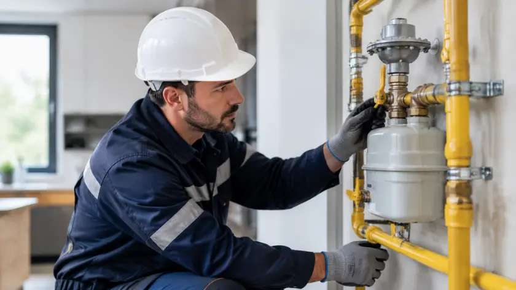

Ana Sayfa

7/24 Acil Sıhhi Tesisat (Ana Sayfa)
Musluk, batarya, klozet, duşakabin, su deposu montajı ve tüm genel sıhhi tesisat arızalarınız için ana sayfamıza göz atın.
Ana Sayfaya Dön →Doğalgaz boru hattı döşeme, dijital dedektörle gaz kaçağı tespiti ve tamiri, ocak doğalgaz dönüşümü, TSE belgeli çelik fleks değişimi ile kombi bakım ve arıza onarımı işlerinizde ortalama 30 dakikada adresinizdeyiz.
Doğalgaz hatlarındaki sızıntılar ve kombi arızaları hem can güvenliğiniz hem de ısınma konforunuz için ihmale gelmez.
Evinizde veya iş yerinizde aşağıdaki durumlardan biri varsa vakit kaybetmeden bizimle iletişime geçin:

Çakmakla kaçak kontrolü yapmak veya standart dışı hortum/conta kullanmak büyük tehlike oluşturur. Pulsar Tesisat olarak dijital gaz dedektörleri, TSE onaylı çelik fleksler, sızdırmazlık macunları ve orijinal enjektör takımlarıyla doğalgaz ve kombi işlemlerinizi tam güvenlik protokolüyle gerçekleştiriyoruz.
WhatsApp Hızlı Arıza Tespiti: Kombinizin ekranındaki arıza kodunu veya ocak/tesisat bağlantı noktasının fotoğrafını WhatsApp'tan göndererek anında net bilgi alabilirsiniz.
Evinizi kirletmeden, kırma-dökme yapmadan ortalama 30-45 dakika içerisinde doğalgaz ve kombi işlemlerinizi güvenle tamamlıyoruz.
Adresinize ulaştığımızda öncelikle hassas dijital gaz dedektörüyle tüm doğalgaz hattını, sayaç ve vana bağlantılarını tarıyor; kombi arızalarında ise su basıncı, pompa, filtre ve sensör ölçümlerini yapıyoruz.
Evinizi kirletmeden doğalgaz boru tadilatını, çelik fleks ve emniyet vanası değişimini, ocak enjektör dönüşümünü veya kombi parça/bakım işlemlerini TSE standartlarında 1. sınıf malzemelerle uyguluyoruz.
Ortalama 30-45 dakika süren işlem sonunda tekrar dijital dedektörle %100 gaz sızdırmazlık onayı alıyor, ocağınızın mavi alev ayarını ve kombinizin sıcak su/kalorifer performansını test ederek garantili teslim ediyoruz.
Evet, her marka set üstü ve ankastre ocağın doğalgaz enjektör (meme) değişimini, gaz kısık ayarı kalibrasyonunu, TSE belgeli çelik fleks hortum montajını ve dijital dedektörle gaz sızdırmazlık kontrolünü yerinde yapıyoruz.
Hassas dijital gaz kaçağı dedektörümüzle sayaç bağlantılarını, vana rekorlarını, ocak fleksini ve kombi hattını tarayarak sızıntı noktasını anında belirliyor; aşınmış conta, vana veya fleks hortumu TSE onaylı malzemeyle değiştirip güvenliğinizi sağlıyoruz.
Evet, kombinin su akıtma, basınç düşürme, sıcak su vermeme veya petekleri ısıtmama arızalarına aynı gün müdahale ediyoruz. Genleşme tankı basıncı, doldurma musluğu, emniyet ventili, üç yollu vana ve filtre kontrollerini yaparak arızayı yerinde gideriyoruz.
Ocak doğalgaz dönüşümü, çelik fleks hortum montajı ve gaz kaçağı onarımı ortalama 20-30 dakika; detaylı kombi bakımı ve arıza onarımı ise ortalama 30-45 dakika içinde tamamlanarak güvenli kullanımınıza sunulur.
Barbaros Hayrettin Paşa Mah. (34516) merkezimizden tam donanımlı doğalgaz ve kombi servis aracımızla Esenyurt, Beylikdüzü ve Avcılar'ın tüm mahallelerine ortalama 30 dakikada ulaşıyoruz:
Komisyonsuz Doğrudan Usta Güvencesi: Barbaros Hayrettin Paşa Mah. 2263. Sk. No: 27/A (34516 Esenyurt) adresindeki kendi iş yerimizden çıkıp geliyoruz. Aracı çağrı merkezleriyle değil, doğrudan yetkili tesisat ustası Özgür Polat (0554 122 38 38) ile görüşürsünüz.
Doğalgaz tesisatı ve kombi servisimizin yanı sıra Esenyurt, Beylikdüzü ve Avcılar genelinde sunduğumuz diğer garantili tesisat çözümlerimizi inceleyin.
Musluk, batarya, klozet, duşakabin, su deposu montajı ve tüm genel sıhhi tesisat arızalarınız için ana sayfamıza göz atın.
Ana Sayfaya Dön →
Akustik dinleme ve termal kamera ile fayans veya duvarlarınızı kırmadan gizli su sızıntılarını noktasal tespit edip onarıyoruz.
Su Kaçağı Tespiti Detayları →
Kırmadan robot cihaz ve pimaş içi kamerayla mutfak, lavabo, klozet, banyo ve ana gider tıkanıklıklarını 30 dakikada açıyoruz.
Tıkanıklık Açma Detayları →
Peteklerin altı ısınmıyor mu? Çift yönlü darbeli makine ve koruyucu kimyasalla evinizi kirletmeden petek temizliği yapıyoruz.
Petek Temizliği Detayları →